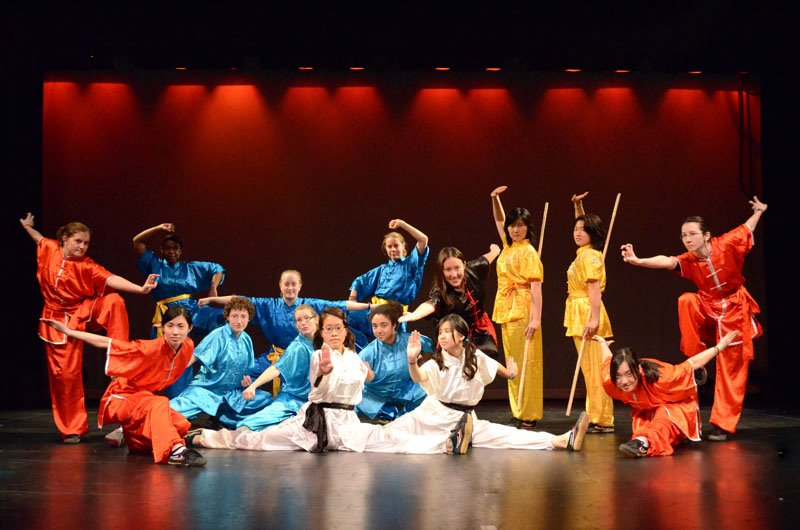
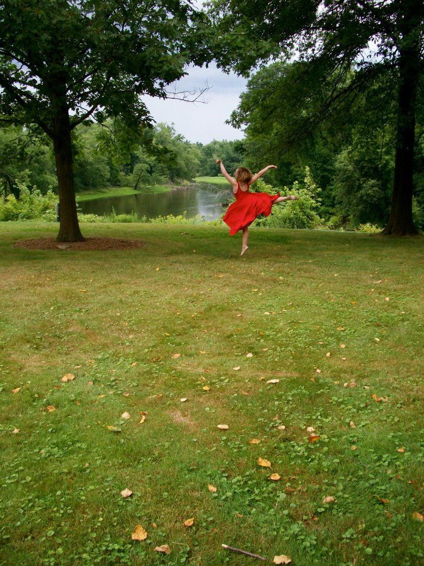

Violin
I've been playing violin for 17 years as part of orchestras and chamber music groups. I was a part of the Brandeis-Wellesley Orchestra and I am currently taking private lessons at Wellesley.

I joined Wellesley Wushu in my first year at Wellesley and have been a part ever since. I enjoy learning new forms and new weapons and am excited for our year-end performance in the Spring! Check out our performances here!
I've been playing violin for 17 years as part of orchestras and chamber music groups. I was a part of the Brandeis-Wellesley Orchestra and I am currently taking private lessons at Wellesley.

I've been dancing since I was three. I enjoy many types of dance including ballet, tap, jazz, gymnastics, and broadway. At Wellesley, I was a part of the AscenDance Modern Dance group and I am currently part of the tap club, OnTap. Check out me tapping here!